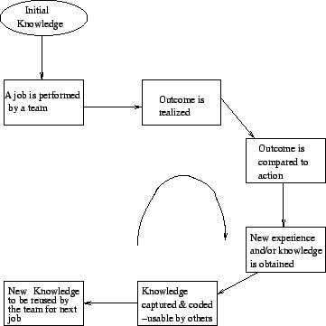
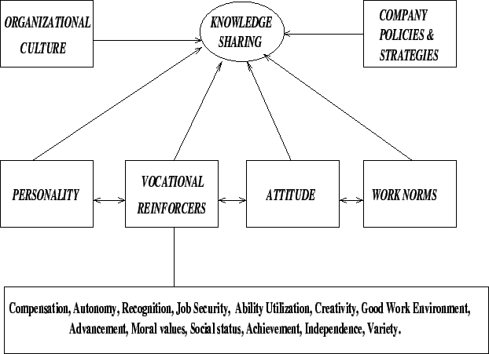

Next: Nonaka's Model of Knowledge
Up: Knowledge Creation & Knowledge
Previous: Knowledge Creation & Knowledge
Contents
- Knowledge update can mean creating new knowledge based on ongoing
experience in a specific domain and then using the new knowledge in
combination with the existing knowledge to come up with updated knowledge
for knowledge sharing.
- Knowledge can be created through teamwork (refer to Figure 3.1)
- A team can commit to perform a job over a specific
period of time.
- A job can be regarded as a series of specific tasks carried out in a
specific order.
- When the job is completed, then the team compares the experience
it had initially (while starting the job) to the outcome
(successful/disappointing).
- This comparison translates experience into knowledge.
- While performing the same job in future,the team can take corrective
steps and/or modify the actions based on the new knowledge they have
acquired.
- Over time, experience usually leads to expertise where one team
(or individual) can be
known for handling a complex problem very well.
- This knowledge can be transferred to others in a reusable format.
Figure 3.1:
Knowledge Creation/Knowledge Sharing via Teams
|

|
- There exists factors that encourage (or retard) knowledge transfer.
- Personality is one factor in case of knowledge sharing.
- For example, extrovert people usually posses self-confidence, feel
secure, and tend to share experiences more readily than the introvert,
self-centered, and security-conscious people.
- People with positive attitudes, who usually trust others and who work
in environments conductive to knowledge sharing tends to be better in
sharing knowledge.
- Vocational reinforcers are the key to knowledge sharing.
- People whose vocational needs are sufficiently met by job reinforcers
are usually found to be more likely to favour knowledge sharing than the
people who are deprived of one or more reinforcers.
Figure 3.2:
Impediments to Knowledge Sharing
|

|
Subsections
Next: Nonaka's Model of Knowledge
Up: Knowledge Creation & Knowledge
Previous: Knowledge Creation & Knowledge
Contents
Knowledge Management Systems
2004-11-01